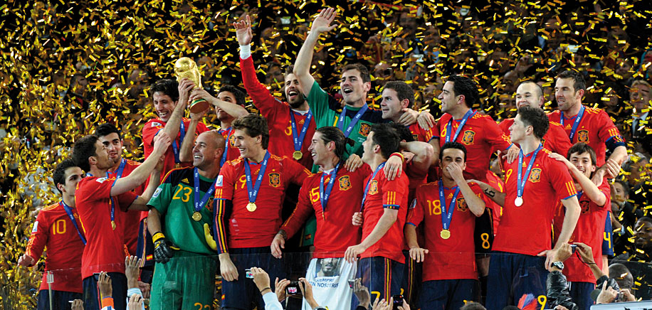

Culture
Food

Spain is extremely famous for the variety of rich flavors found in it's food. It is a very important part of the Spanish culture and differs immenselly depending on what region you are in. Nothern spain is known internationally for it's famous beans, sausages, vegetables, and seafoods. Meanwhile eastern Spain is best known for rice dishes such as Paella. Central Spain on the other hand is where you find dishes such as suckling pig and lamb. Like most cultures the Spanish cuisine is primarily influenced by the geography and climate that surrounds it. Spain is well known for it's fresh seafood thanks to the it's Mediterranean roots. For this reason fried fish is an essential part of the eastern coast of Spains diet. While ingredients such as garlic and olives are a favourite of most Spanish cuisine. Spainsh people are also renowned for producing some of the best tasting flavored sausages, cured hams and cheeses. These food combinations are all part of tapas, which is a apperizer or snack which consists of mostly cold food and tends to be a very social meal emphasising the importance of food in Spanish culture. But there are also many pastries and desserts native to the country of Spain, such as the Churro which is a long thin piece of fried dough, which can then be dipped into hot chocolate or sugar.
Sports
Spain has a huge international reputation in the sporting world. The most popular sports are football (soccer to those of American background), basketball, tennis and cycling. Varieteis of football have been played in Spain for hundreds of years and therefor is the most played sport in the country. Spain also feature one of the strongest football divisions in the world, La Liga, which feature clubs such as FC Barcelona and Real Madrid. Football has managed to attach itself to Spanish culture and has led to them being extremely successful in the sport, winning the FIFA World Cup in 2008 and 2012 as well as achieving the gold medal in the olympics of 1992. Football isn't the only sport Spain thrives in, as Spain is also home to the Rafael Nadal, one of the top tennis players in the world who has successfully won multiple Grand Slam titles. A less well known but more tradional sport to Spain is Bullfighting, which takes place from March to October. The most famous bullfighting tournament takes place in Madrid every year during the fiesta of San Isidro which attracts a huge numbers of viewers.
Art

From architects to painters, playwrights to sculptors, Spain has been the homeland of many famous artists over the centuries. Spanis artists have been highly infuential in the development of various European and American artistic movements due to the countries historical and geographical diversity. Painters such as El Greco who was born was born in Crete but spent most of his time in Toledo, Spain influenced the Renaissance and art as a whole in such a large way, he has been described as the precursor of both Expressionism and Cubism. On the other end of the spectrum Pablo Picasso, argueably the most well known modern artist was born in Malaga, Spain. He is heralded as a co-founder of Cubism and was internationally renowned due to his abstract style and wacky personality. Spain is also home to many famous architects who's monuments still stand to this day such as the Sagrada Familia, a church in Barcelona, designed bu Antoni Gaudi in 1882. A more modern design is the Guggenheim Museum in Bilbao which was established in 1997 and is one of the most admired works of contemporary architecture in the world.
Music
Spanish music is world famous and often just goes by the name flamenco, the mixing music and dance, which originated in southern Spain. Overtime flamenco transformed finding it's way into modern music through rock and pop. Famous examples of the flamenco style include Raimundo amador and Ketama. This isn't the only type of music that was represented in Spain as time went on Opera became a very popular medium and Spain soon influenced much of the world when it came to it. IN more modern times, like most of the world, there has been a move towards pop music such as Shakira, alejandro sanz and Jennifer Lopez. Through all this time Spain has managed to stay relevant, constantly innovating and influencing the musical world.